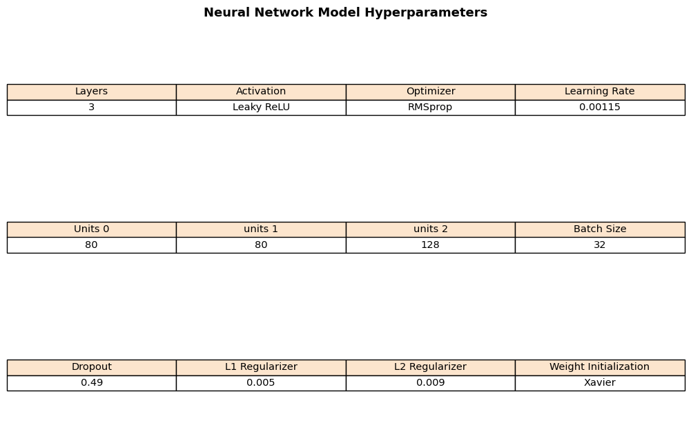
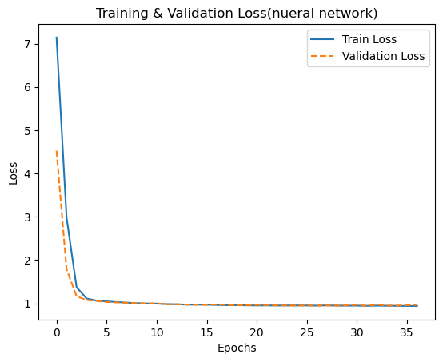

soccer betting strategy using nueral network
introduction
Data
Betting data was collected from football-data.co.uk(https://www.football-data.co.uk/ ). This website contains betting statistics from most major football leagues worldwide with numerous seasons and basic soccer statistics such as the number of shots. Specifically, this dataset contains more than 20 betting company’s betting odds and betting-related information, which is essential for our research goal. We extracted English Premier League data for the 2017 to 2025 season, since the English Premier League is the largest league in the world and it is one of the leagues that is betting friendly.
This dataset contains some soccer statistics, but it is basic soccer statistics, such as the count of shots. But to predict soccer match outcomes to use for betting strategy, more advanced statistics are required, since soccer is a sport that isn’t determined by just shots. To enhance our dataset, we extract data that has an xG goal statistics. xG goal is an advanced soccer metric that computes the probability that a shot will be a goal. To compute this, it requires statistics such as shot location and angle of shots, which is the essence of soccer statistics. The dataset for this statistic was retrieved from the Kaggle dataset: premier league match data and season stats(https://www.kaggle.com/datasets/evangora/premier-league-data ), containing 1889 to 2024 English premier league season, but very old seasons have different rules, metrics which is hard to compare with modern football, so we only treated season from 2017 to 2025.
However, this dataset has some missing values in key statistics specifically it is missing for the recent season; 2024,2025. So to solve this problem, worldfootball R (https://github.com/JaseZiv/worldfootballR ) was used, which is an R wrapper. This data contains key soccer statistics for the 2024, 2025 season.
Method
method used for this project is dense feed forward neural network. Structure of this project is a multi-classification problem, classifying win-loss-draw in a soccer game match and utilizing it for our betting strategy.
So, dense feed-forward neural network architecture was built to solve multi-classification problems, setting three classes, two as home team win, one as draw, and zero as away team win. Inside the dataset, there are 22 features, but only features related to game statistics(eg. Xg goal difference) were used, leaving fourteen features for analysis. Also, some features are discrete and some are in probability, so features were scaled by standard normalization.
Dense feed-forward neural networks are a very powerful deep learning method, specifically for this project architecture. To a large extent, a Dense feed-forward neural network consists of three layers; input layer, hidden layer, and output layer. The input layer consists of feature vectors that are input to the neural network architecture, with weight initialization. In this project, weight initialization is chosen by a hyperparameter searching mechanism, choosing between Xavier and random initialization. Xavier initialization initializes weights with a variance that considers the number of input and output neurons, whereas random initialization initializes randomly, using such a normal distribution.
From this input layer, it is connected to hidden layers, fully connected by several neurons. The hidden layer makes a network to learn complex nonlinear relationships between input and output layers. Hidden layers consist of activation functions that compute the output of each node using input and weight from the previous step(the first layer will get from the input layer), in this project, it’s been optimized by tuning process, choosing between leaky-ReLu, Tanh, ReLU function. There are several functions. The output layer is the last layer that gets output from all fully connected layer processes. Depending on the problem(eg. regression, classification) it can have various activation functions. However, this project aims to predict win-draw-loss for soccer matches, which consists of three classes, and multi-classification problems. The softmax function was used as an activation function for the output layer. Softmax function converts logit to probability, which is useful for getting results for multi-classification problems. Besides neural network architecture, there are important elements for training neural network models. First is the Loss function. The loss function measures prediction via model by comparing actual value. Since this is a multi-classification problem, categorical cross entropy was used for the loss function. The second is the regularizer. Regularizers penalize the Loss function to prevent overfitting. There are generally two types of regularizers, L1, and L2. L1 penalizes by adding absolute value, whereas L2 penalizes by adding squared value. Also, a dropout rate was used, dropout rate drops out a certain proportion of neurons during training, which prevents overfitting. Lastly, there is an optimizer. Optimizers minimize loss function when learning parameters. Since initial parameters are random(even with different methods to set initial parameters), it will give bad or unexpected predictions, so to prevent this, an optimizer was used. Optimizers generally compute gradient descent, with learning rate, and optimizing value. There are various optimizers, but in the hyperparameter tuning process, stochastic gradient descent, RMSprop, and adaptive moment estimation(ADAM) were used. Stochastic gradient descent is a normal gradient descent method, RMSprop adapts the learning rate for each parameter, and ADAM shares features in RMSprop but it also accelerates each update in a consistent direction.
One of the key processes in a neural network is tuning hyperparameters. There are many hyperparameters to tune, tuning generally makes better and optimized results from the model. For tuning, a grid search was applied, pre-set range of each parameter was the best combination for the model. Elements that were tuned are as follows: number of hidden layers, number of neurons, activation function, optimizer, learning rate, dropout rate, Regularizers, batch size, and weight initializers.
result
model’s hyperparameter was tuned using grid search.

Table 1 shows hyperparameters chosen via the grid search method. Three layers were chosen, making a multi-layer perceptron(MLP).

Plot 1 shows the training and validation plot, showing the overall training and validation loss training process. Both training and validation loss decrease sharply within five epochs and converge fast with stable values. This indicates that training in neural networks is effective. Also, validation doesn’t increase at some point significantly, and cross-over training loss, indicating it has less tendency for overfitting. Lastly, convergence after five epochs is very smooth, this shows that training is very stable. Overall the training process is very effective.
Plot 2 is a confusion matrix for a neural network, showing how this model classified the labels used for the target variable(home win-away win-draw for the full-time game). The confusion matrix shows that the home team win(class 2) and the away team win( class 0) classified well, classifying around 82%. However, prediction for draws shows bad performance, predicting zero to draws, rather than predicting a home win or away win. This might be due to an imbalanced dataset, while home and away wins have more data points compared to draw results. From the neural model, we simulated sports betting, to demonstrate whether the model is helpful for betting strategy.
| Class | Precision | Recall | F1-Score | Support (# samples) |
|---|---|---|---|---|
| 0 (Home Win) | 0.58 | 0.84 | 0.68 | 95 |
| 1 (Draw) | 0.00 | 0.00 | 0.00 | 66 |
| 2 (Away Win) | 0.75 | 0.87 | 0.80 | 137 |
| Overall Accuracy | 67% (298) |
Table 2 shows classification reports, showing the performance of classification. As observed in the confusion matrix, neural networks capture well for home win and away wins, but couldn’t catch when the game result is a draw. Recall scores for a home win and away win are 0.84 and 0.87, indicating the model captures most of home win and away win. However, the model fails to capture Draw. Also for Home wins, the precision score is 0.58, which shows that there are false positives, but for away wins, the precision score is 0.75, which indicates this model detects excellent away wins. From the neural network’s result we simulated betting whether our model is an effective and helpful betting strategy. From the model, we receive predicted probability and this will be compared with bookmaker’s probability, in this project we used probability from bet365’s probability. We assume betting one dollar and if our probability is at least 5% better than bet365’s probability, we will place the bet.